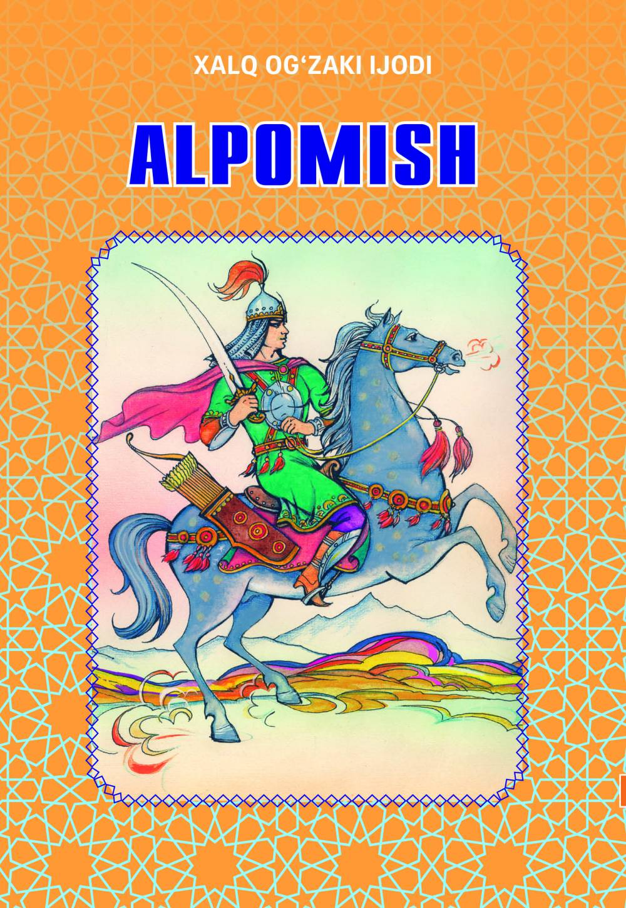

\n | 1 | \n Alpomish | \n “Alpomish” — o‘zbek xalqining eng mashhur epik dostoni bo‘lib, "\n "unda xalqning ozodlik, mardlik, sadoqat, va Vatanga muhabbat g‘oyalari kuylanadi. "\n "Doston qahramoni Alpomish o‘zining jasorati, yurtini himoya qilishdagi fidoyiligi bilan \n "xalq orasida timsolga aylangan. Asar asrlar davomida og‘zaki an’analar orqali saqlanib, "\n "xalqning ruhiyati, e’tiqodi va qadriyatlarini ifodalaydi." | \n O‘zbek xalq og‘zaki ijodi | \n Doston | \n 80000 so‘m | \n 1 | \n \n \n | \n
\n ']